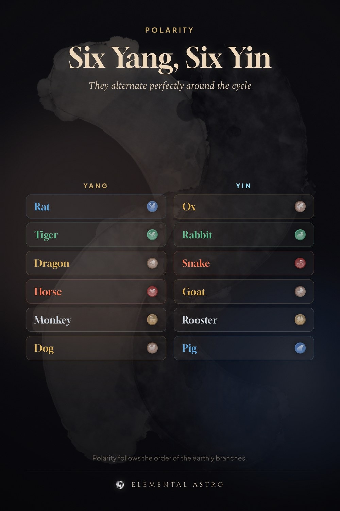

Six of the twelve animals are yang and six are yin, and they alternate perfectly around the cycle — Rat yang, Ox yin, Tiger yang, Rabbit yin, all the way round. It is why animals two apart understand each other and animals one apart rarely do. Save it. Yin yang zodiac, Chinese zodiac polarity, earthly branches, Chinese astrology basics.
https://www.elementalastro.io/learn/yin-yang